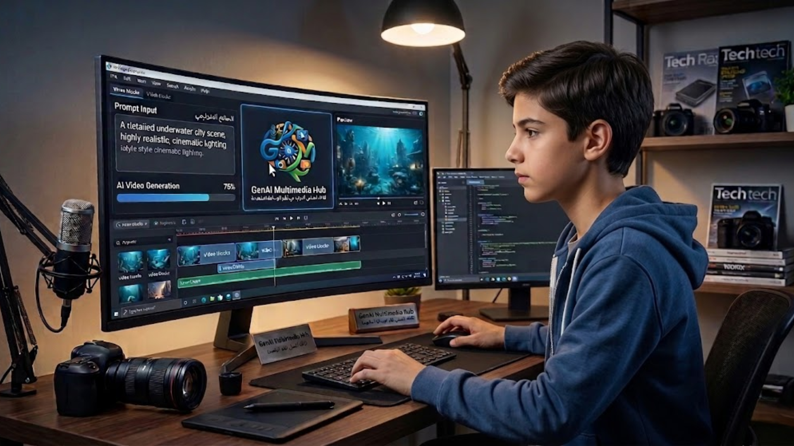
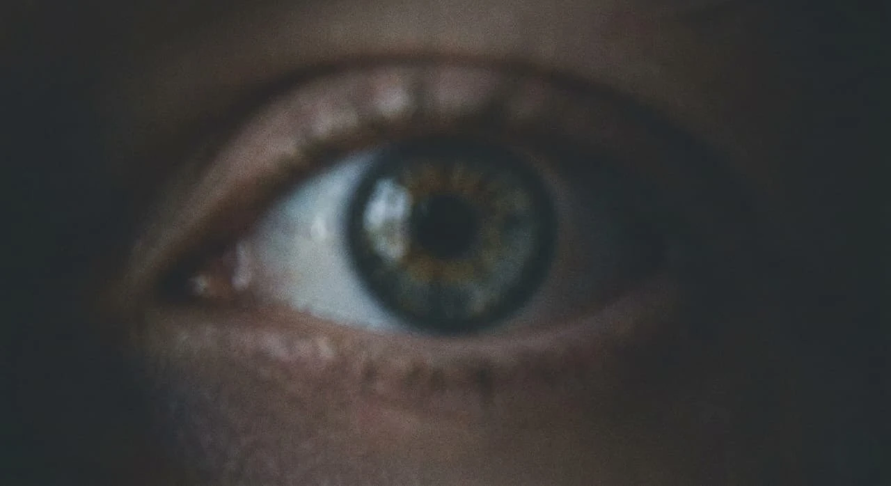
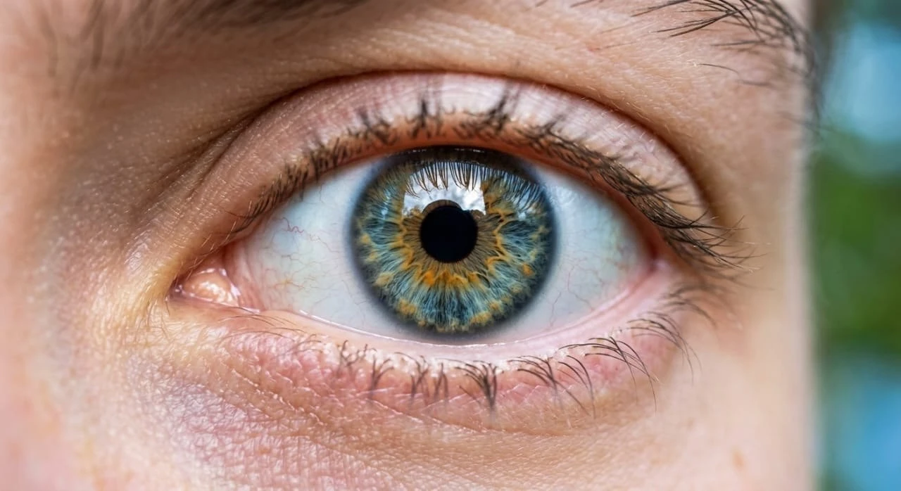

اسرار كتابة البرومبت
- حدّد النمط البصري أو الأسلوب بشكل واضح داخل الطلب.
- أضف تفاصيل الإضاءة والألوان والمزاج لرفع الجودة.
- جرّب أكثر من نسخة ثم حسّن النتيجة على مراحل قصيرة.
Future of Creative Technology
Welcome to GenMedia Hub, your gateway to creative AI learning.
Generative AI is a smart technology that can create new content such as text, images, video, and audio. This website introduces the core idea and shows how AI tools support creativity in modern multimedia systems.

Generative AI
من المبتدئ الى المحترف - رحلتك تبدأ هنا
Generative AI is a type of artificial intelligence that learns patterns from data and then creates original content. It is useful in multimedia projects because it helps students and creators produce ideas and media faster.
أفكار عملية تساعدك للحصول على نتائج أقوى عند استخدام أدوات الذكاء الصنعي التوليدي.
Every visual below includes the exact prompt used to guide the model.
Prompt: A sprawling, futuristic indoor learning common, no walls, illuminated by holographic screens displaying binary code and stylized neural networks. A minimalist architectural style, blue and white lighting accents, high-key lighting, photorealistic, cinematic shot, shallow depth of field, wide-angle lens, room for text on the right side.
البرومبت: مساحة داخلية تعليمية واسعة مستقبلية، بدون جدران، مضاءة بشاشات هولوجرافية تعرض شيفرة ثنائية وشبكات عصبية مُصممة بأسلوب زخرفي. طراز معماري بسيط، لمسات إضاءة زرقاء وبيضاء، إضاءة عالية النبرة، تصوير فوتورياليستي، لقطة سينمائية، عمق ميداني ضحل، عدسة واسعة الزاوية، مساحة للنص على الجانب الأيمن.
Prompt: A robotic hand with realistic joint detail, holding a paintbrush made of pure light. The brush is painting a swirling, vibrant galaxy on an invisible canvas, sparkling data dust flying around, ethereal and artistic lighting.
برومبت: يد روبوتية بتفاصيل مفاصل واقعية، تحمل فرشاة مصنوعة من نور خالص. الفرشاة ترسم مجرة دوّامة زاهية على لوحة غير مرئية، غبار بيانات متلألئ يتطاير حولها، وإضاءة أثيرية وفنية.
Prompt: A visualization of sound waves as intricate, three-dimensional geometric patterns made of glowing golden light, flowing and undulating across a dark, abstract digital landscape. Rhythm and melody depicted in light, elegant and dynamic.
البرومبت: تصور لموجات الصوت كأنماط هندسية ثلاثية الأبعاد معقدة مصنوعة من ضوء ذهبي متوهج، تتدفق وتتلوى عبر منظر رقمي تجريدي داكن. الإيقاع واللحن مرسومان بالضوء، أنيق وديناميكي.
Drag the neon slider to compare the original scene with an AI-enhanced version using Image-to-Image workflow.


Interactive five-year roadmap showing how AI reshapes the designer, composer, and director roles.
Designers shift from manual iteration to rapid visual prototyping with prompt-driven style systems.
AI Adoption Level: 35%
AI can generate short videos, voice narration, subtitles, and audio effects. This makes production easier for education, marketing, and storytelling.
00:00 / 00:00
Subtitle: "Generative AI helps creators produce images, videos, and audio quickly while keeping ideas creative and meaningful."
Balanced view of opportunities and challenges for real-world projects.
These tools are widely used to generate text, visual art, and video content.
LUMA is an AI video generation tool that turns text and images into cinematic motion clips.
Creates high-quality artistic images from text prompts for design and visual storytelling.
Supports AI video editing and generation for short films, content creation, and presentations.
This project introduces generative AI and shows how it can support learning, creativity, and multimedia production through images, video, and audio.